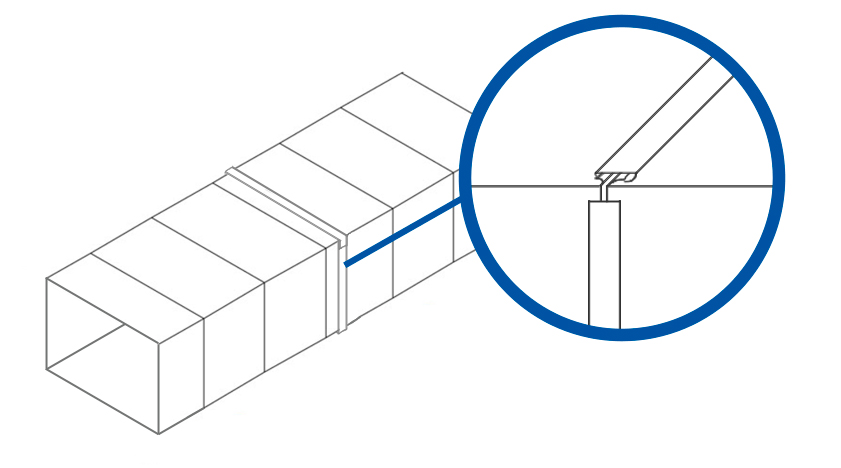
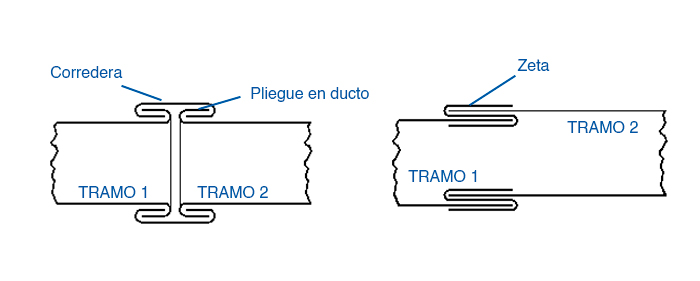

Montaje simple
una resolución rápida y fácil de instalar
Sistema de unión
Sistema Zeta-Corredera para montajes simples y recubrimientos con poco espacio disponible.
Es el sistema más sencillo de montar y una opción muy práctica para recubrimientos exteriores, ventilación a la vista y sectores donde el espacio disponible obliga a resolver con una unión más simple.
Recubrimientos
muy utilizado en jacketing y terminaciones exteriores
Espacios acotados
conveniente cuando no sobra lugar para el montaje
Cuándo elegirlo
Una alternativa eficiente cuando lo prioritario es simplificar montaje y resolver recubrimientos.
El sistema Zeta-Corredera es ideal cuando el proyecto pide una unión sencilla, de buena velocidad de instalación y especialmente útil en conductos a la vista, recubrimientos o sectores con espacio limitado.

Qué resuelve este sistema
La configuración Zeta-Corredera reduce complejidad de montaje y facilita el armado en situaciones donde la disponibilidad de espacio condiciona el tipo de unión posible y la velocidad de ejecución en obra.
Guía de elección
Consideraciones de uso
Es la alternativa indicada cuando el proyecto pide practicidad, montaje simple y una resolución eficiente en sectores con poco espacio disponible.
- Es el sistema más simple y sencillo de montar.
- Funciona muy bien en recubrimientos exteriores y jacketing.
- Es una buena elección cuando el espacio disponible es reducido.
- Debe evaluarse con criterio cuando la exigencia de estanqueidad es alta.
Principal ventaja
Simplifica mucho el trabajo del instalador y resuelve recubrimientos con una unión de costo contenido.
Dónde conviene aplicarlo
En ventilación a la vista, cierres exteriores, jacketing y sectores donde la maniobra es más limitada.
Punto a evaluar
Al ser una unión más simple, conviene revisarla con criterio cuando la exigencia de estanqueidad es más alta.
Vista técnica
La referencia general y el sistema en corte ayudan a definir mejor cuándo conviene usar Zeta-Corredera.
Para este sistema también incorporamos la imagen del corte, porque es la forma más clara de entender su simplicidad de montaje y las diferencias de estanqueidad frente a otras alternativas.
Vista general
Configuración del sistema
La imagen completa permite ver el tipo de resolución que propone esta unión cuando se busca practicidad y velocidad de instalación.

Sistema en corte
Lectura simple del cierre
El corte muestra con claridad por qué este sistema se monta con facilidad y también por qué conviene evaluarlo con criterio cuando la exigencia de fuga es mayor.
Definición técnica
Si necesitás resolver recubrimientos o una obra con espacio acotado, te ayudamos a elegir el sistema conveniente.
Revisamos tipo de montaje, nivel de exigencia, terminación y contexto de obra para indicarte si Zeta-Corredera es la mejor solución o si conviene pasar a una opción más estanca.